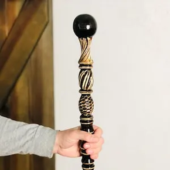

HUZZAH! I am Tony the great wizard
Spell Caster, Potion creator, and staff creator
I’m driven to learning new spells and magic everyday. Quick to adapt in any scenario. Graduated from the Theodore’s Prestigious Wizardry School with an honors in Spell Casting.
I’m driven to learning new spells and magic everyday. Quick to adapt in any scenario. Graduated from the Theodore’s Prestigious Wizardry School with an honors in Spell Casting. I’ve began my studies because of the vast knowledge that wizardry has to offer. Creativity is a must needed skill in wizardry, which ultimately led me down the profession of being a wizard.
Projects
Banished the Dark knight at Oolacile
During the Night Raid disaster at Oolacile, a great enemy had wreaked havoc at the small town. Using light magic, We casted the great enemy down, saving the town.
Created a masterwork staff
While studying at Theodore’s Prestigious Wizardry School, I’ve discovered the secrets channeling casting energy within a staff. I used life wood to create a staff. I then infused a crystal in the staff to channel great energy when in use.
